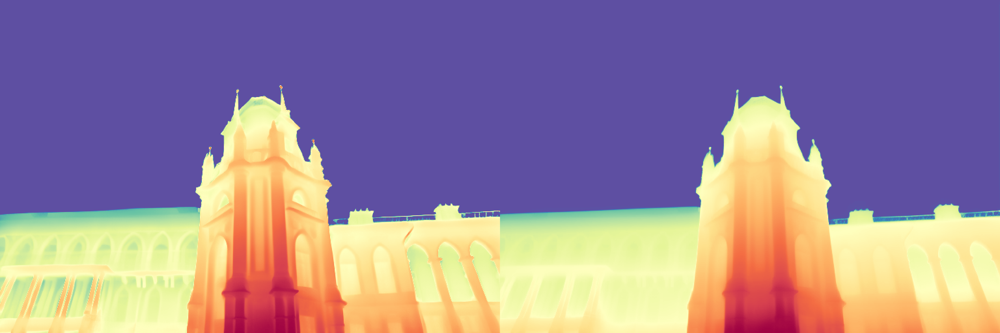
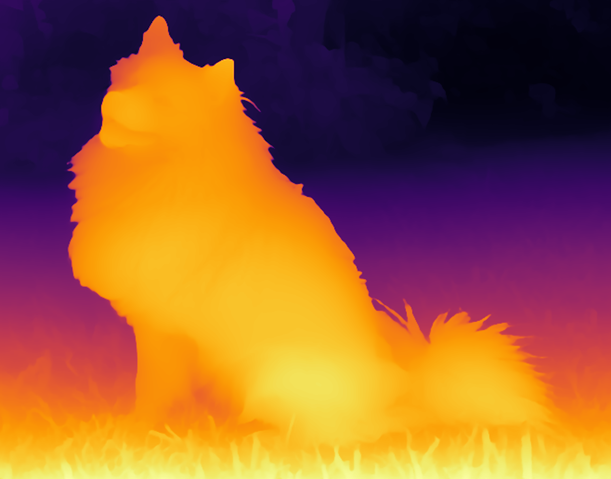
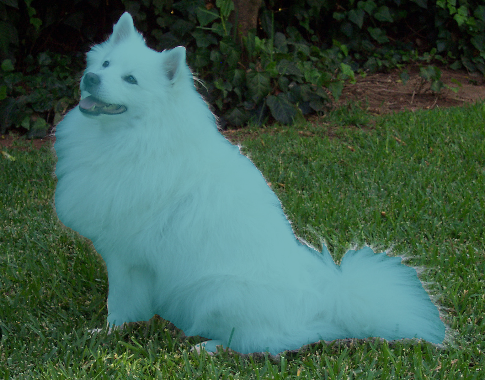
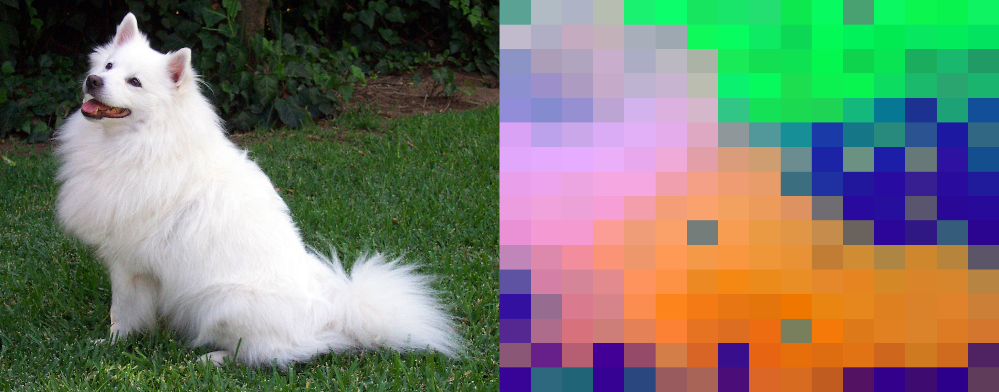
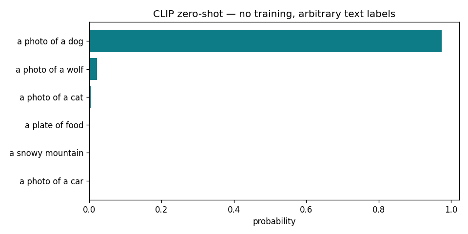
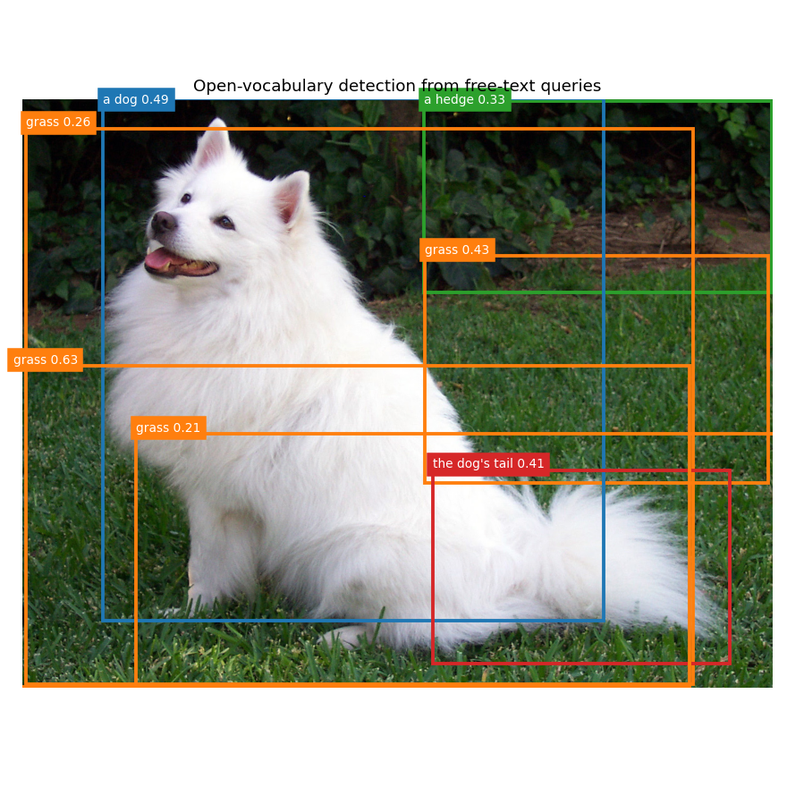
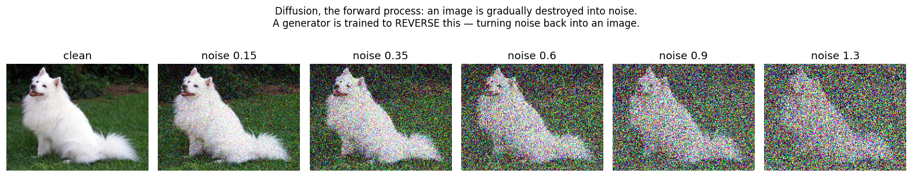
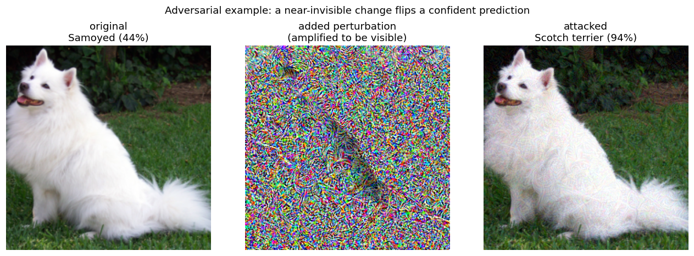

Running the papers' own models
Of the 1,016 CVPR 2026 papers that released code, the cleanly-runnable ones ship HuggingFace weights. Here we load and run an actual paper's model on the GPU — not a generic baseline.
VisionThink — efficient vision-language model L4 GPU · 7B
The paper's own finetuned Qwen2.5-VL-7B (Senqiao/VisionThink-Efficient), loaded from HuggingFace and run live. We showed it the photo and asked two questions:

Q: Describe this image in detail.
A: A white dog with a fluffy coat sitting on a grassy lawn, mouth slightly open (panting/smiling), ears upright, tail curled over its back; green foliage and trees behind — an outdoor garden setting, bright and sunny.
Q: What breed is this dog, and what visual cues indicate that?
A: A Samoyed — cues: (1) thick white fluffy fur, (2) upright pointed ears, (3) tail curled over the back, (4) short muzzle / friendly expression.
A genuine state-of-the-art CVPR 2026 model, running on your GPU.
Iris — diffusion-based monocular depth T4 GPU · SOTA depth
An actual CVPR 2026 depth model — Strike1999/Iris ("Bringing Real-World Priors into Diffusion Models for Monocular Depth Estimation") — run via the paper's own two-stage inference on its example images. From a single photo it recovers remarkably crisp geometry: sharp on the cathedral's spires and arcades, smooth on the far sky. Noticeably finer than a generic depth baseline.

We ran the paper's repo directly (clone → HF weights → their inference). Note: their own infer.sh had a bug — it passes a --prediction_type flag their infer.py rejects — so we called infer.py with the correct args. The model itself works great.
Text → image, live on a GPU
Colab T4 · ~2 min The "make pixels from meaning" theme — the bridge run in reverse. We typed a sentence; a diffusion model turned pure noise into a matching image, generated live on a Colab GPU driven straight from this terminal (and using zero Claude quota — GPU compute is separate).
Prompt: "a lone lighthouse on a rocky cliff at golden hour, dramatic clouds, cinematic, highly detailed." Model: SDXL-Turbo via diffusers. Nothing about the scene was retrieved — every pixel was synthesized from the text.
from diffusers import AutoPipelineForText2Image
import torch
pipe = AutoPipelineForText2Image.from_pretrained(
"stabilityai/sdxl-turbo", torch_dtype=torch.float16).to("cuda")
img = pipe(prompt, num_inference_steps=4, guidance_scale=0.0).images[0]Depth from a single photo
ran on CPU · 30s The "recover 3D from flat pictures" theme, in one run. A photograph throws away distance — every point on a line of sight collapses to one pixel. A depth model has learned, from millions of images, to guess that lost dimension back. We fed it one ordinary photo; it returned a per-pixel distance map with no depth sensor involved.

Model: Depth Anything V2 (small) via Hugging Face transformers. The dog and the foreground grass are correctly read as near; the hedge behind as far. This is the raw material a robot or AR headset turns into a 3D scene.
from transformers import pipeline
from PIL import Image
pipe = pipeline("depth-estimation", model="depth-anything/Depth-Anything-V2-Small-hf")
depth = pipe(Image.open("photo.jpg"))["depth"] # runs on CPUSegmentation from a single point
ran on CPU · 115s The "name and locate what's in the picture" theme. We gave the model one point on the dog. It returned a pixel-perfect outline of the whole animal — including the wispy fur and tail — without ever being told what a dog is. This "promptable" segmentation is a backbone many CVPR papers build on.

Model: Segment Anything (SAM, ViT-base) via transformers. One click in → a clean object mask out. Combine this with the depth map above and you have the two primitives most perception systems start from.
Asking a model about an image
Colab T4 The "see and talk" theme. A vision-language model takes the photo plus a question in plain English and answers in plain English — no fixed label set. We asked three questions about the dog photo; these are its verbatim answers.
Q: What animal is this, and what is it doing?
A: The animal in the picture is a Samoyed dog. It is sitting on the grass, with its tail raised and its mouth open, possibly panting or barking.
Q: Describe the setting and the lighting in one sentence.
A: The image captures a serene outdoor setting with lush green grass and a backdrop of dense foliage, creating a peaceful and natural atmosphere.
Q: Is the tail bushy or thin, and what color is the fur?
A: The tail of the dog is bushy and white.
Model: Qwen2-VL-2B-Instruct via transformers. It correctly identified the breed (Samoyed), the setting, and fine attributes (bushy white tail) — reading the image, not a caption.
One photo → a 3D Gaussian scene
Colab T4 · CUDA-only The biggest theme (3D from flat pictures), run end to end and tied to the depth demo above. We took the single dog photo, used the estimated depth to lift every pixel into a 3D Gaussian (a soft colored blob), then re-rendered the scene from new camera angles it never saw — with gsplat, the CUDA rasterizer these papers build on. Gaussian Splatting requires a GPU, so this is Colab-only.
[Gaussian Splatting turntable rendering on the GPU — image will appear here once the run completes.]
Running on video, not just stills
The same methods extend across time. Below is depth run per-frame; the full video suite — SAM2 object tracking, scene-change VLM Q&A, and text→video — is packaged as a ready-to-run Colab notebook, because a browser Colab kernel handles the multi-model video pipeline far more reliably than the CLI.
Depth, every frame
Colab T4 Depth Anything V2 run on each frame. Left: original; right: estimated depth.
Video understanding — the "significant change" question
Qwen2-VL-2B · Colab A vision-language model watches a clip and answers temporal questions a still-image model cannot — like "what significantly changes?" It correctly described the sample clip and named the main subject; on a two-scene clip (in the notebook) it calls out the actual scene cut.
The full video suite — run it yourself
Open video_demos.ipynb in Colab (download it, then colab.research.google.com → File → Upload notebook; set Runtime → GPU). It runs all four video demos top-to-bottom on your Pro GPU: depth, VLM scene-change Q&A on a meadow→underwater clip, SAM2 point-to-track object tracking, and text→video generation.
How the engines actually work
Not outputs — mechanisms. Each of these ran live on a Colab GPU and reveals something the whole conference is built on.
1 · Objects segment themselves, no labels DINOv2
Per-patch features PCA'd to color: the dog, grass, hedge, and dirt separate into distinct regions — the network was never told what any of them are. This emergent structure is why self-supervised learning underpins modern vision.

2 · Classify anything by words CLIP
Zero training — just text labels. CLIP scored the photo 97% "a dog", 2% "wolf" (a Samoyed does look wolfish). Pictures and words share one space → open-vocabulary everything.

3 · Detect things described in words OWLv2
Free-text queries, no training on those categories — it even boxed the part-level "the dog's tail." You can find anything you can describe: the modern perception paradigm.

4 · What "diffusion" actually means forward process
An image is gradually destroyed into noise. A generator is trained to run this backwards — turning noise into an image (that's the text→image demo at the top). Destroy, then learn to reverse.

5 · Fool the model invisibly adversarial
A near-invisible perturbation flips a confident Samoyed (44%) into Scotch terrier (94%) — from an image that looks identical to you. This fragility is why robustness is its own field.

The mechanisms behind the themes
Beyond running models, these six experiments reveal how the field's engines work: diffusion denoising trajectory (generation), DINOv2 emergent features (self-supervised learning), CLIP shared space (vision-language), ViT attention maps (interpretability/hallucination), adversarial examples (robustness), and open-vocabulary detection (perception). Each cell explains the concept and the takeaway.
Open concepts.ipynb in Colab (download → File → Upload notebook; Runtime → GPU). Runs top-to-bottom; no external video/download to hang.
DeCo — running an actual paper's code
needs GPU Of the 1,016 CVPR 2026 papers that released code (see the tables on each theme page), we cloned DeCo: Frequency-Decoupled Pixel Diffusion for End-to-End Image Generation (235★) — a generation-theme paper with a working demo.
What it is
DeCo generates images by flow-matching (a diffusion cousin) directly in pixel space, splitting an image into low-frequency structure and high-frequency detail and denoising them on separate schedules — hence "frequency-decoupled." It ships pretrained text-to-image and class-to-image checkpoints and a Gradio demo.
The repo, read
DeCo/
├── app.py # Gradio text-to-image demo (entry point)
├── main.py # train / predict driver (lightning CLI)
├── configs_t2i/ # text-to-image configs (sft_res512.yaml, ...)
├── configs_c2i/ # class-to-image configs (DeCo_XL.yaml, ...)
├── src/
│ ├── models/denoiser/decoupled_improved_dit.py # the DDT denoiser (core idea)
│ ├── models/vae/ # latent VAE
│ └── diffusion/stateful_flow_matching/ # the flow-matching sampler
└── requirements.txt # torch 2.7.1, diffusers, lightning, gradioHow to run it
# 1. install
pip install -r requirements.txt
# 2. download the pretrained checkpoint (t2i_DeCo.ckpt) into ./ckpts/ (from the repo's HF link)
# 3. launch the text-to-image demo
python app.py --config ./configs_t2i/sft_res512.yaml --ckpt_path=./ckpts/t2i_DeCo.ckpt
# ...or non-interactive class-to-image inference:
python main.py predict -c ./configs_c2i/DeCo_XL.yaml --ckpt_path=./ckpts/DeCo_XL.ckpt